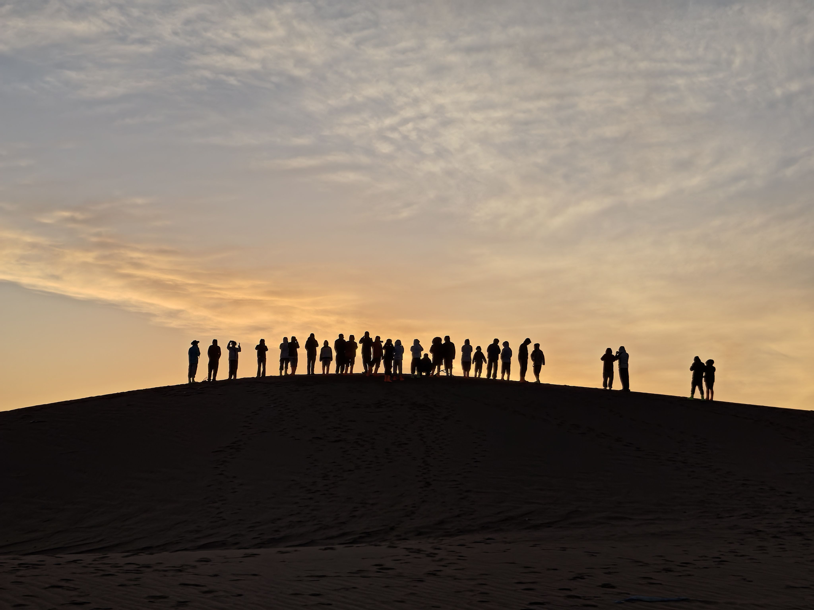
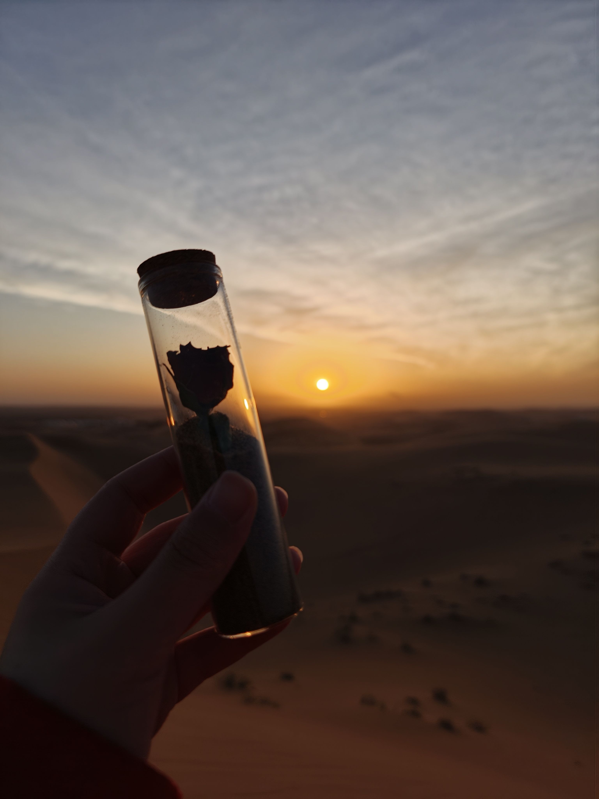
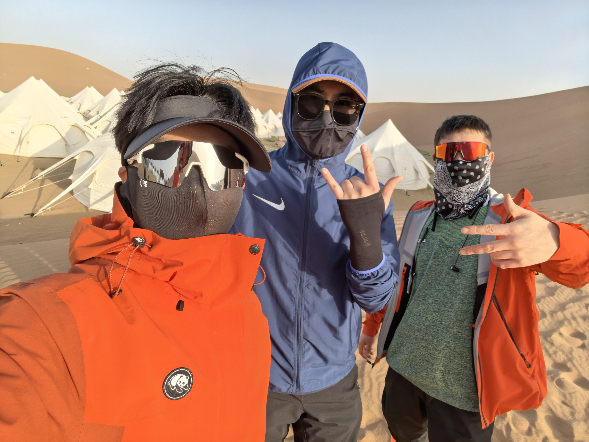
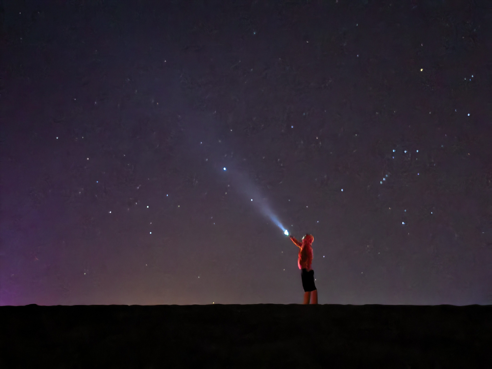
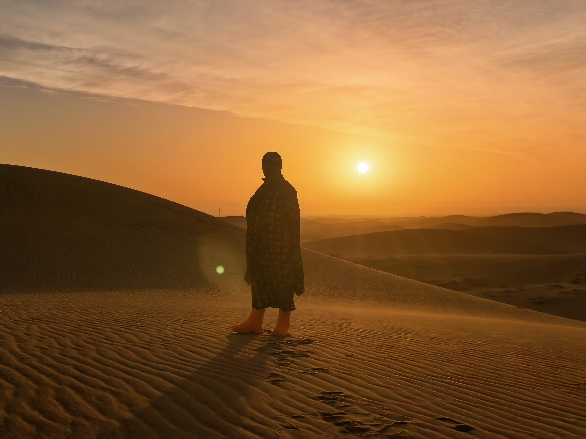
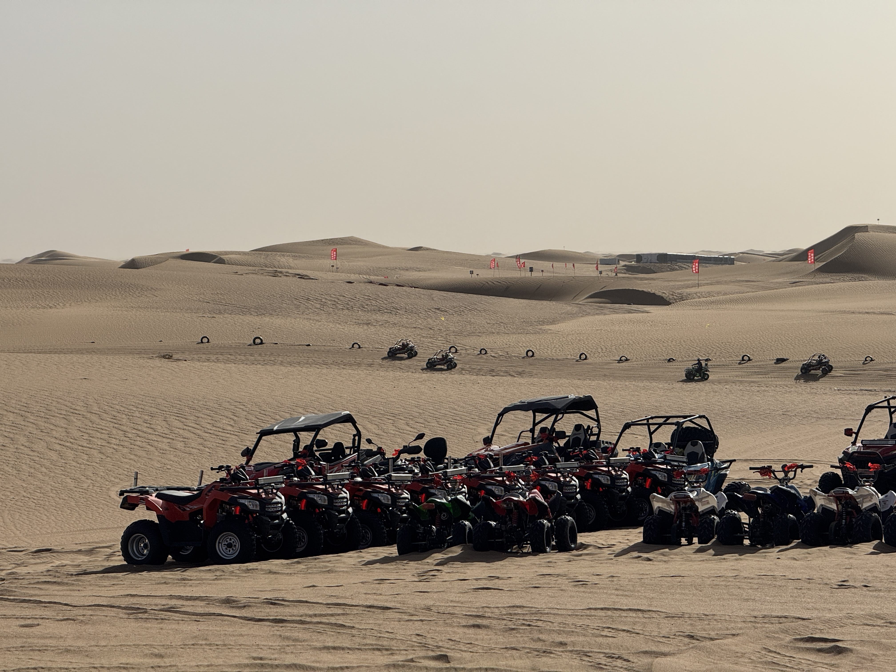

腾格里
The Tengger Desert · 2026
每想你一次，天上飘落一粒沙，从此形成了撒哈拉。—— 三毛
每想你一次，天上飘落一粒沙，从此形成了撒哈拉。—— 三毛
有人问我为什么要去沙漠。我想了很久，说不出一个像样的理由。
大概是因为，城市的日子过久了，人会被慢慢磨成一块光滑的石头——不再有棱角，不再有疼痛，也不再知道自己真正的样子。
而沙漠不会骗你。它不会给你虚假的舒适，也不会替你回答任何问题。它只是静静地摊开在那里，五十公里，无边无际。
你走或不走，它都在。但如果你走了，你会遇见一些东西——关于自己，关于天地，关于那些被遗忘了很久的、真正重要的事。

从银川出发，翻过贺兰山，进入阿拉善的那一刻，车窗外的风景突然变了。绿色消失，戈壁出现，然后是沙——一望无际的、安静得不讲道理的沙。
脚踩上去的瞬间，我明白了什么叫"脚踏实地"。城市里的路太硬了，硬到让人忘了脚掌原来是有感觉的。而沙漠是软的，每一步都陷进去一点，像大地在轻轻接住你。
下午开始徒步。沙丘起伏如凝固的海浪，阳光将影子拉得极长。走了大约十公里，肩膀开始酸痛，嘴唇干裂，鞋里灌满了细沙。
但我不想停下来。因为每翻过一座沙丘，看到的景色都不一样——新的光影，新的线条，新的沉默。



这是最艰难的一天。
翻过一座沙丘，以为到了尽头，结果发现后面还有五座。翻过五座，发现后面还有十座。沙漠就是这样——它用沉默教你耐心，用辽阔教你谦卑。
中午的时候，我坐在沙丘顶上喝水，忽然觉得整片沙漠像一块巨大的琥珀。阳光透过云层洒下来，每一粒沙子都在发光。
那一刻，我什么都不想。不想工作，不想手机，不想昨天和明天。脑子里只有一个念头：活着真好。
夜里露营。篝火点燃的时候，所有人都安静了。抬头，银河低垂，触手可及。星星多得像撒了一地的钻石，随便一颗都比城市里见过的所有星星加起来还要亮。
三毛说过，她每想你一次，天上就落下一粒沙。我想，如果这是真的，那撒哈拉也不过如此吧。

最后的日出，是我见过最美的一次。
太阳从沙丘后面升起来的时候，整片沙漠先是变成了深红色，然后是橙色，然后是金色——像有人在用一支巨大的画笔，一寸一寸地涂过来。
回望来路，脚印已经被风抚平了。好像从未来过，又好像哪里都留下了痕迹。
三毛说："远方有多远？请你告诉我。"没有人能回答这个问题。但走了腾格里之后，我想，远方不是一个地方，而是一种状态。
是你在路上的那种状态。
是你不再害怕未知的那种状态。
是你终于承认，自己比想象中更勇敢的那种状态。





回来以后，很多人问我："沙漠好玩吗？"
我说不好玩。真的不好玩。
没有空调，没有WiFi，走不完的路，晒不完的太阳，脚底的水泡，嘴唇的干裂。每天累到倒头就睡，早上又被冻醒。
但我想再去一次。
因为在那三天里，我第一次真正安静下来。没有手机震动，没有消息提醒，没有"在吗"和"收到请回复"。只有风声、脚步声和自己心跳的声音。
三毛在撒哈拉的时候说："生命的过程，无论是阳春白雪，青菜豆腐，我都得尝尝是什么滋味。"
我想，我理解她了。
沙漠教会我最重要的事——你不需要征服什么，你只需要走过去。走过去，然后你会发现，自己比自己以为的更结实，世界比自己以为的更辽阔。
这，就是"四郎带你探索"的意义。
不是告诉你哪里好玩，不是给你一份攻略。而是想让你知道：有些路，值得你亲自去走。